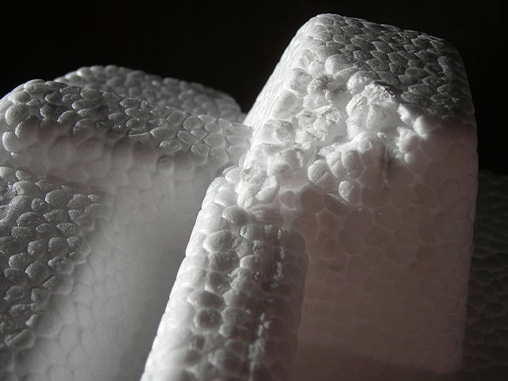

Plastic materials¶
They are polymers made from natural gas or refined oil.
Table of contents:
Polymers¶
The polymers are large molecules composed of many small molecules, identical to each other, called monomers.

Photograph of a real polymer using an atomic force microscope.¶
The monomers are small molecules that join together in long chains formed by the union of up to thousands of elements. These long chains can be linear, have branches or in the form of a network.
Polymers are generally compounds based on bonds of carbon atoms, called organic compounds, although they can also be based on bonds of silicon atoms, called silicones.
Properties of plastics¶
- Mechanical properties of plastics
In general, plastics are soft and have medium mechanical resistance. The toughness depends on the plastic. There are plastics that are very resistant to impacts, such as polycarbonate, and others that are very fragile.
Some special high-performance plastics withstand high temperatures better than others and have good mechanical resistance. This is the case of Kevlar that is used in bulletproof vests.
- Density
Plastics are light, with a density similar to that of water (1 kg/liter)
Some plastics are manufactured with gas bubbles inside to ensure that they have very low density and are good thermal insulators. For example, polyurethane foam or expanded polystyrene (white cork) have this structure.
- Response to light
Some plastics such as polycarbonate or methacrylate are very transparent and are used to make windows, DVDs, headlights, etc.
Plastics discarded in the environment degrade in sunlight, breaking down into polluting microplastics and producing toxic substances.
- Manufacturing properties of plastics
- Plastics are very malleable, extremely ductile and meltable. All this makes it much easier to carry out welding or manufacture thin sheets, threads, or molded parts.
- Conductivity of plastics
- Plastics have little thermal and electrical conductivity, which is why they are used as electrical and thermal insulators.
- Chemical properties of plastics
- They resist oxidation, acids and caustics very well. For this reason, many chemical containers are made of plastic.
- Ecological properties of plastics
Most plastics are not biodegradable, they are toxic in their manufacture and in the environment.
Microplastics currently represent a major environmental problem because they are incorporated into the food chain as food for animals, which humans later end up eating. It is estimated that we currently ingest the equivalent in weight of a credit card in microplastics each year. Microplastics emit hormone-like substances that negatively affect the health of all animals.
Plastics can be recycled a small number of times because when recycled they degrade, losing their original properties and are no longer useful for manufacturing the same product.
It is estimated that only 14% of plastic is collected for recycling.
Thermoplastics¶
They can be fused or melted at not very high temperatures and harden again when they cool.
- Polyethylene terephthalate (PET)
Widely used in beverage and textile packaging.
- Polyethylene (PE)
It is one of the most common plastics due to its low price. It is used in bags, transparent film, pipes, containers, etc.
There are two main types of polyethylene that differ in their density:
- High density polyethylene HDPE
- Low density polyethylene LDPE
- Polyvinyl chloride (PVC)
Rigid PVC: used in containers, windows, pipes.
Flexible PVC: used to make coverings for cables, toys, shoes, floors, etc.
- Polypropylene (PP)
It is the most used plastic after Polyethylene.
It is used to make food packaging, transparent sheets, fabrics, etc.
- Polystyrene (PS)
This plastic melts at relatively low temperatures (100ºC).
It is used to make yogurt containers, razors, expanded polystyrene ("white cork" or polystyrene) for insulation and protection.
Expanded polystyrene or polyexpan, also called "white cork".¶
Phyrexian, CC BY-SA 3.0, via Wikimedia Commons.- Recycling symbols
Thermoplastics are usually identified with a symbol that indicates their composition, to facilitate their recycling.

{kind=link}
{kind=link}
{kind=link}
High performance thermoplastics¶
They are thermoplastics with better mechanical and heat resistance performance than common thermoplastics.
- Nylon
- It is used to make very resistant threads such as those in stockings, parachutes, the inside of tires, etc. Also to manufacture mechanisms such as gears and bearings, racks, etc.
- Teflon
Polytetrafluoroethylene, better known as Teflon, is a practically inert polymer, so it does not react with other substances. It has very low friction, is non-stick and resists temperatures up to 270ºC.
It is used as a coating for pans, tapes to prevent water leaks from the threads of faucets, mechanisms that do not require lubrication, etc.
- Polycarbonate
- It is very transparent and very resistant to impacts, which is why it is used as a substitute for glass. CDs, DVDs, windows, bulletproof glass, riot shields, motorcyclist helmet visors, COVID separation panels, etc. are made with it.
- Methacrylate
It is even more transparent than polycarbonate. 10 to 20 times more impact resistant than glass, it resists weathering and ultraviolet radiation.
It is used to make fiber optics, signs, displays, aquariums, works of art, etc.
Thermostables¶
They do not melt once manufactured. If the temperature increases too much, they degrade without melting, just like wood.
- Baquelite
It was the first synthetic plastic, created in 1907. It can be melted and molded during manufacturing, but once solidified it cannot be melted again.
It is still used today to make pan handles and handles for kitchen utensils, electrical terminals, etc.
- Melamine
- Its best-known use is to cover chipboard along with colored paper or imitation wood. Furniture that uses this technique is also called melamine furniture.
- Epoxy resin
It is used to make very resistant two-component adhesives with which airplanes, automobiles, sports equipment, etc. are manufactured.
Another very common use is the production of fiberglass or carbon fiber panels, used to make boats, racing car fairings, glass containers, printed circuit boards, etc.
- Polyurethane
- Its best-known use is the manufacture of adhesive foams that serve as thermal insulation of walls or to glue door and window frames with great capacity to fill gaps.
Elastomers¶
They are polymers with great elasticity, meaning that they can stretch a lot when force is applied and, when the force is removed, they recover their initial size.
- Latex
It is of natural origin, a resin that is extracted from the syringa tree (Hevea brasiliensis).
It is used in gloves, condoms, mattresses, clothing, balls, tires, chewing gum, etc.
- Neoprene
Its best-known use is the manufacture of water clothing and boots that are thermal insulators (diving suits).
It is also used to make adhesive tape, protective covers, sleeping bags, etc.
- Silicone
Most polymers are organic compounds, because they are based on long carbon chains. On the contrary, silicones are based on long silicon chains, forming inorganic polymers.
Its use can be highlighted as an adhesive for window glass and joints, kitchen molds for oven or ice, medical prostheses, etc.
Questionnaires¶
Test-type questionnaires on plastic materials.